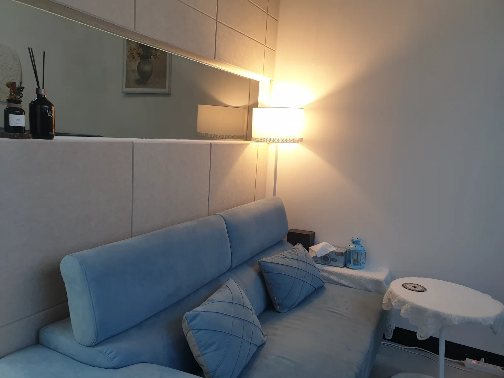
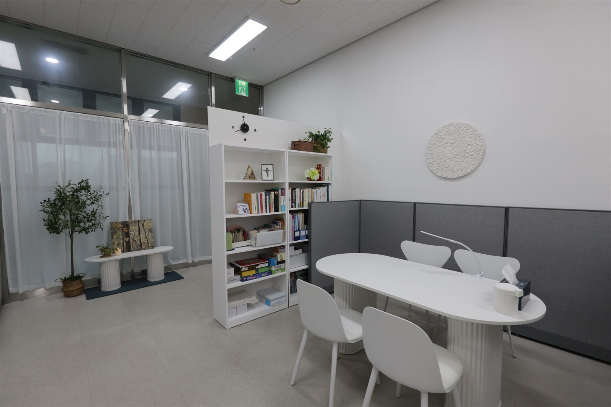
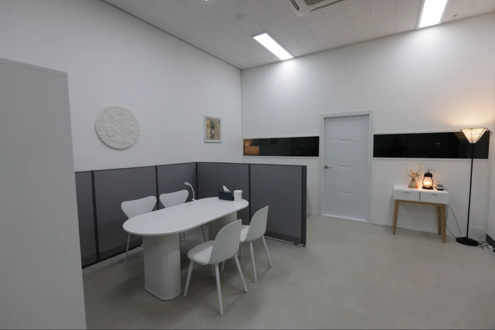
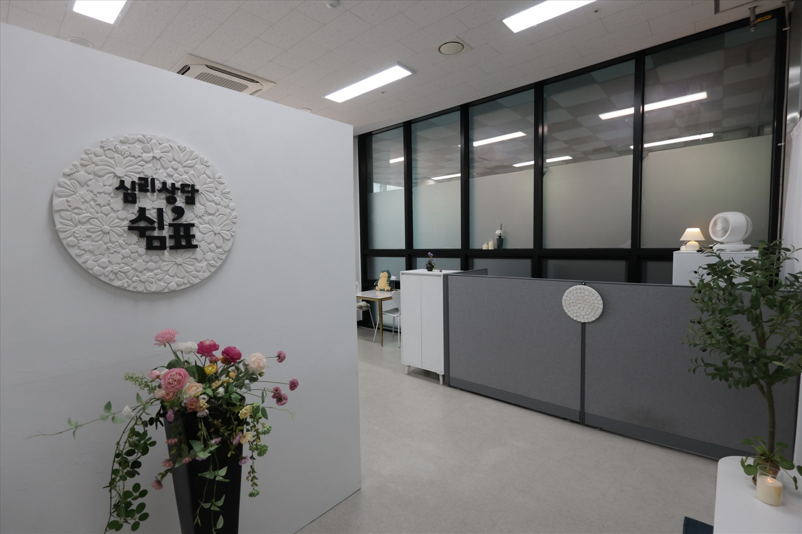
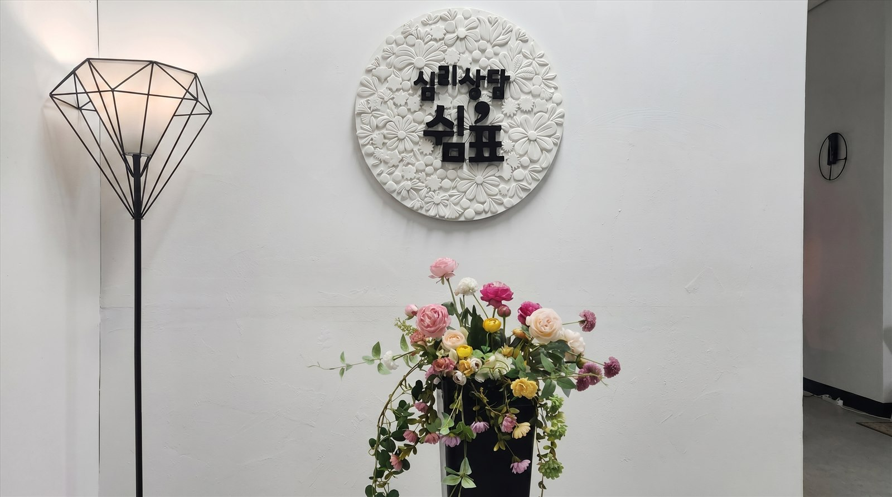
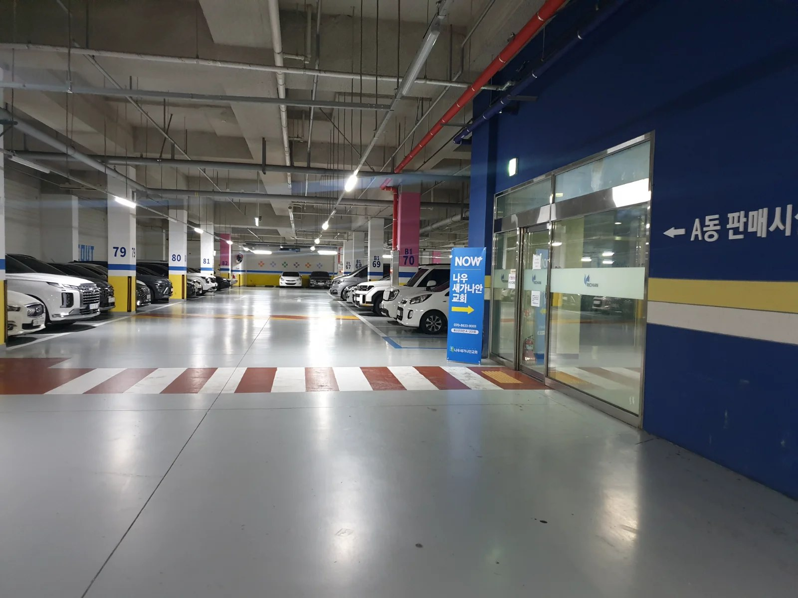

전문적인 상담
임상심리사 1급의 전문성을 바탕으로 함께합니다.
당신의 이야기에 귀 기울이는 공간
임상심리사 1급의 전문성을 바탕으로 함께합니다.
부담 없이 자신의 이야기를 꺼낼 수 있는 공간을 지향합니다.
각자의 고민과 상황을 존중하며 상담합니다.
성인·가족·청소년·노인 등 폭넓은 상담을 안내합니다.
처음 오시는 분도 편안하게 시작할 수 있도록
상담 분야 확인
희망 시간 협의
센터에서 확정 안내
60분 상담
필요에 따라 상담 계획 논의
실제 쉼표의 상담실과 공간입니다.






한 분 한 분의 이야기를 소중히 듣겠습니다.
마음의 어려움은 사람마다 다른 모습으로 찾아옵니다. 쉼표는 각자의 경험과 감정을 존중하며, 자신의 마음을 이해하고 앞으로 나아갈 길을 찾는 과정을 함께하고자 합니다.
센터장 소개 더 보기검사 종류와 진행 가능 여부는 센터에 문의해 주세요.
성격 특성과 자기 이해
현재 정서 상태 이해
인지적 특성 이해
필요에 따른 검사 상담
※ 위 항목은 검사 분야 안내이며, 구체적인 검사 도구 및 시행 여부는 별도 확인이 필요합니다.
희망 날짜와 시간을 살펴보세요. 예약 확정은 센터 확인 후 진행됩니다.
날짜를 선택해 주세요.
※ 이 달력은 시간 선택 체험용이며 실제 예약 현황과 연결되어 있지 않습니다. 선택만으로 예약이 접수되지 않습니다.
상담을 시작하는 작은 용기, 쉼표가 함께하겠습니다.
기본 상담은 1회 60분이며 매 정시에 시작합니다.
현재는 대표 전화 010-3568-2327로 문의해 주세요. 온라인 예약 화면은 체험용으로 실제 접수되지 않습니다.
성인, 커플·부부·가족, 아동·청소년, 노인, 집단, 진로, 심리검사 및 기타 상담을 안내합니다.
일요일은 정기휴무입니다. 평일은 10:00~22:00, 토요일은 13:00~22:00 운영합니다.
상담 종류에 따른 비용은 센터에 직접 문의해 주세요.
심리상담 쉼표로 오시는 길을 안내합니다.
주소
경기도 군포시 송부로96번길 12, 풍산리치안 A동 203호
이용시간
월~금 10:00~22:00
토요일 13:00~22:00
일요일 정기휴무

주차장 참고 사진